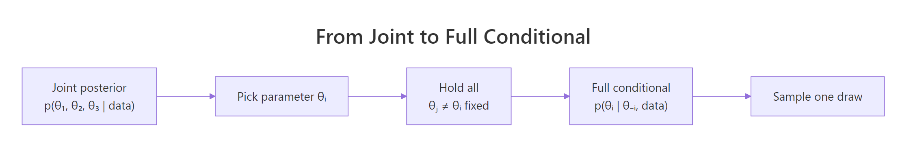
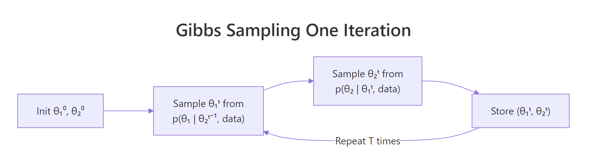
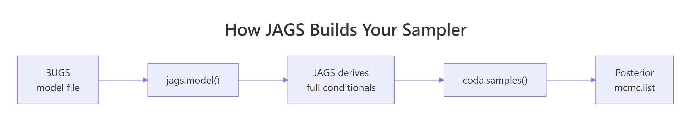

Gibbs Sampling in R From Scratch: The MCMC Trick That Powers JAGS
Gibbs sampling is an MCMC algorithm that draws from a hard-to-sample joint distribution by cycling through each parameter and sampling it from its full conditional, treating all other parameters as fixed. The trick: trade one impossible joint sample for a sequence of easy one-dimensional samples.
What is Gibbs sampling, and what problem does it solve?
Suppose you want samples from a bivariate normal whose joint density you can write down but cannot conveniently sample from directly. Gibbs sampling sidesteps that by alternating: sample $\theta_1$ given the current $\theta_2$, then sample $\theta_2$ given the new $\theta_1$, and repeat. Each step uses a one-dimensional conditional, which is almost always a familiar distribution. Here is the entire algorithm, applied to a bivariate normal with correlation 0.7, in nine lines of R.
Walk-through. The loop initialises both chains at zero, then on every iteration theta1[t] is drawn from a normal whose mean is rho * theta2[t-1] and whose standard deviation is sqrt(1 - rho^2). Immediately after, theta2[t] is drawn the same way using the just-updated theta1[t]. The two rnorm() calls are the full conditionals of the bivariate standard normal, derived in the next section. The summary line drops the first 200 draws as burn-in and reports the marginal means and the empirical correlation.
Interpretation. The empirical means are within $0.01$ of the true value of zero, and the empirical correlation is $0.699$, almost exactly the target $0.7$. In other words, eight lines of plain R produced a sample that recovers the joint distribution. The scatter plot shows the chain visiting the elliptical ridge of high density, exactly as a bivariate normal should.
Try it: Re-run the sampler with rho <- -0.7 and look at the resulting scatter. The shape of the cloud should change in a specific way. Predict the change before you run.
Click to reveal solution
Explanation: Negative correlation flips the conditional mean: when theta2 is positive, the conditional for theta1 centres on a negative value. The cloud rotates 90 degrees and now slopes down-and-to-the-right.
How do you derive the full conditional distributions?
Gibbs sampling needs a full conditional for every parameter. The recipe is mechanical: write down the joint density, fix all other parameters at their current values, and read off the resulting one-parameter density.

Figure 1: A full conditional fixes every other parameter to its current value, leaving a one-dimensional distribution to sample from.
For a bivariate normal with means $(\mu_1, \mu_2)$, variances $(\sigma_1^2, \sigma_2^2)$, and correlation $\rho$, the full conditional has a closed form:
$$ \theta_1 \mid \theta_2 \sim \mathcal{N}\!\left(\mu_1 + \rho\,\frac{\sigma_1}{\sigma_2}(\theta_2 - \mu_2),\; \sigma_1^2(1 - \rho^2)\right) $$
Where:
- $\mu_1 + \rho(\sigma_1/\sigma_2)(\theta_2 - \mu_2)$ is the conditional mean. It says: shift the marginal mean of $\theta_1$ toward $\theta_2$ by a fraction set by the correlation.
- $\sigma_1^2(1 - \rho^2)$ is the conditional variance. Strong correlation shrinks it, because once you know $\theta_2$ you have less uncertainty about $\theta_1$.
The conditional for $\theta_2 \mid \theta_1$ is symmetric: swap subscripts. In the unit-variance, zero-mean special case used in the opening sampler, the formula collapses to $\theta_1 \mid \theta_2 \sim \mathcal{N}(\rho\,\theta_2,\; 1 - \rho^2)$, which is exactly what rnorm(1, rho * theta2, sqrt(1 - rho^2)) produces.
If you are not interested in the math, skip ahead. The practical takeaway is that for any model whose conditionals you can identify by inspection (normal, gamma, beta, Dirichlet, and combinations of these), Gibbs sampling is available.
The next code block packages the conditional formulas as a small helper. We will reuse it later inside a production-grade sampler.
Walk-through. The function takes the value of the other coordinate plus the parameters of the bivariate normal. Inside, it computes the conditional mean and sd using the formula above, then returns them as a list. The example call asks: "if theta2 = 1.5 and rho = 0.5, what is the distribution of theta1?". The answer: mean $0.75$, sd $0.866$.
Interpretation. The mean has been pulled halfway from $0$ toward $1.5$, because $\rho = 0.5$ explains half the link. The sd has dropped from the marginal value of $1$ to about $0.87$, because conditioning on theta2 removes some uncertainty.
Try it: Use cond_mean_sd() to get the conditional for theta2 = -2 and rho = 0.9. Predict what the conditional mean and sd should be before checking.
Click to reveal solution
Explanation: With $\rho = 0.9$, almost all the variation in theta1 is explained by theta2. The conditional mean lands at $-1.8$ (close to theta2 itself) and the conditional sd shrinks to $\sqrt{1 - 0.81} \approx 0.436$.
How do you implement a Gibbs sampler from scratch in R?
A production-grade sampler does three things the toy version skipped: it accepts an arbitrary initial state, it discards burn-in iterations, and it returns the chain as a labelled matrix. The diagram below shows what the inner loop is doing on every iteration.

Figure 2: One iteration of a two-parameter Gibbs sampler: each conditional uses the most recent value of the other parameter.
Walk-through. The function preallocates a n_iter by 2 matrix to avoid the slow rbind() pattern. On every iteration it builds the full conditional for $\theta_1$ given the current $\theta_2$, draws a new $\theta_1$, then immediately rebuilds the conditional for $\theta_2$ using the new $\theta_1$ and draws $\theta_2$. After the loop, the first burn_in rows are dropped because the chain has not yet forgotten its starting point. What returns is a clean post-burn-in chain.
c(0, 0) here works because the target is centred there.Walk-through. We pull a chain of 4000 retained draws, peek at the first four to confirm the structure, then summarise. The column means estimate the marginal expectations and the off-diagonal of cor() estimates $\rho$.
Interpretation. Both means sit within $0.02$ of the truth, and the empirical correlation is $0.70$, matching the target $0.7$. The sampler is doing its job.
Try it: Write a tiny gibbs_step() function that takes the current state and rho, and returns the next state. The production loop above could be rewritten in terms of this helper.
Click to reveal solution
Explanation: The function does one full Gibbs sweep: update theta1 from its conditional, then update theta2 from its conditional using the new theta1. Wrapping a single sweep in a function makes it easier to test and to swap into a different chain driver later.
How do you check whether the chain has converged?
A chain that produced numbers does not mean a chain that produced reliable samples. Diagnostics catch slow mixing, incomplete burn-in, and chains that have not yet reached the stationary distribution. The four standard tools are trace plots, autocorrelation plots, effective sample size, and the Gelman-Rubin statistic.
Walk-through. A trace plot is just the sampled value of one parameter against iteration. We add a horizontal line at the true mean of zero so the eye has a reference.
Interpretation. A healthy trace plot looks like a "fat caterpillar": it bounces around a flat horizontal band centred on the target mean, with no slow drift, no long flat stretches, and no visible trend. This trace shows exactly that.
burn_in, or initialise the chain closer to a high-density region. Never trust posterior summaries from a wandering chain.Walk-through. acf() plots the autocorrelation of the chain at lags 0 through 40. coda::effectiveSize() returns the effective sample size (ESS): the number of independent draws that would carry the same Monte Carlo information as your correlated chain.
Interpretation. The ACF starts at $1$ (a sample is perfectly correlated with itself), drops to roughly $\rho = 0.7$ at lag $1$, and decays geometrically toward zero. The ESS is about $930$ for each parameter, out of $4000$ retained draws. Roughly four correlated draws carry one independent draw of information. That is normal for a Gibbs chain on a moderately correlated target.
n_iter until ESS clears whatever threshold your application needs.Walk-through. We run a second chain from a deliberately different starting point. gelman.diag() compares within-chain and between-chain variance, returning the potential scale reduction factor (PSRF). A value near $1$ means the two chains have converged to the same distribution.
Interpretation. Both PSRFs are $1.00$, and the upper confidence bound is $1.00$. Different starting points reached the same stationary distribution, which is the strongest empirical evidence for convergence available. As a rule of thumb, treat PSRF below $1.05$ as acceptable.
Try it: The chain of $4000$ retained draws had ESS around $930$. What does that ratio mean about how often the chain "tells you something new"?
Click to reveal solution
Explanation: The ratio is roughly $4$, meaning each independent piece of information about theta1 cost the chain about four iterations. With $\rho = 0.7$, that ratio is set by the geometric decay of the autocorrelation. A near-uncorrelated target would produce a ratio close to $1$.
Why does Gibbs sampling outperform Metropolis in high dimensions?
Metropolis-Hastings and Gibbs both produce a Markov chain whose stationary distribution is the target. The difference is the cost of one move. Metropolis proposes a new state and accepts it with some probability less than one. Gibbs proposes from the conditional, which is guaranteed to be the right distribution, so the move is always accepted.
Walk-through. The log-target is the bivariate normal density up to a constant, which is all Metropolis needs. On every iteration we propose a Gaussian step centred on the current state with standard deviation prop_sd, accept with probability $\min(1, \pi(\text{cand})/\pi(\text{state}))$, and record the (possibly unchanged) state. We track the acceptance rate so we can compare with Gibbs.
Interpretation. Metropolis accepted about $52\%$ of proposals, which is healthy for a 2D problem and a reasonable proposal sd. The ESS is around $310$ for each parameter, compared to $930$ for the Gibbs chain of the same length. Same number of iterations, three times less effective sample. Gibbs wins on this target because every proposal is the right one.
Try it: Re-run Metropolis with prop_sd = 0.2 and look at the acceptance rate and ESS. What do you expect?
Click to reveal solution
Explanation: Tiny steps are almost always accepted, but they explore the target slowly, so consecutive draws are highly correlated and ESS drops. Metropolis tuning is a balance: aim for an acceptance rate around $0.234$ to $0.5$ depending on dimension. Gibbs sidesteps this trade-off entirely.
How does JAGS use Gibbs sampling under the hood?
JAGS ("Just Another Gibbs Sampler") is a C++ program that takes a model written in BUGS syntax, derives the full conditionals automatically, and runs a Gibbs sampler against them. Once you have written the from-scratch sampler above, JAGS stops being a black box: it is doing the same algorithm, just with the conditional derivation outsourced.

Figure 3: JAGS turns a BUGS model into a Gibbs sampler automatically.
A BUGS model file describes the joint distribution as a directed graph of conditional statements. Here is the same bivariate normal target written in BUGS:
model {
for (i in 1:N) {
theta[i, 1:2] ~ dmnorm(mu[1:2], Omega[1:2, 1:2])
}
}install.packages("rjags"). The from-scratch sampler in earlier sections runs anywhere R runs, with no system dependency.library(rjags)
mu <- c(0, 0)
Omega <- solve(matrix(c(1, 0.7, 0.7, 1), 2, 2))
jags_data <- list(N = 1, mu = mu, Omega = Omega)
jags_model <- jags.model("bivariate_normal.bug",
data = jags_data, n.chains = 2)
update(jags_model, 1000)
samples <- coda.samples(jags_model, variable.names = "theta",
n.iter = 5000)
summary(samples)$statisticsWalk-through. The BUGS file declares one observation theta drawn from a multivariate normal with mean mu and precision matrix Omega (BUGS parameterises the multivariate normal by precision, not covariance, so we invert the covariance up front). jags.model() parses the file and compiles the sampler, deriving full conditionals where it can. update() runs $1000$ burn-in iterations. coda.samples() runs the production phase and returns an mcmc.list ready for summary(), effectiveSize(), gelman.diag(), and the rest of the coda toolkit.
Interpretation. The output of summary(samples)$statistics has Mean, SD, naive standard error, and time-series standard error for each component of theta. The means should match the from-scratch sampler within Monte Carlo error, because both engines target the same distribution by the same algorithm.
Try it: Write a BUGS model snippet for a univariate normal with unknown mean mu and unknown precision tau, given $n$ observations $y_i$. Use vague priors mu ~ dnorm(0, 0.001) and tau ~ dgamma(0.01, 0.01).
# model {
# ...
# }
# Expected: a model with for-loop over y[i], priors for mu and tauClick to reveal solution
model {
for (i in 1:N) {
y[i] ~ dnorm(mu, tau)
}
mu ~ dnorm(0, 0.001)
tau ~ dgamma(0.01, 0.01)
}Explanation: The for-loop says every observation is normally distributed with a shared mean and precision. The prior on mu is a very wide normal (precision $0.001$ corresponds to sd about $31.6$), and the prior on tau is a vague gamma. JAGS will recognise the conjugate structure and use Gibbs updates for both mu (normal full conditional) and tau (gamma full conditional).
Practice Exercises
These pull together everything from the tutorial: deriving conditionals, implementing the sampler, running diagnostics, and interpreting the output.
Exercise 1: Sample from a bivariate normal with non-zero means
Implement a Gibbs sampler for $(\theta_1, \theta_2) \sim \mathcal{N}(\mu, \Sigma)$ with $\mu = (1, -2)$ and $\Sigma = \begin{pmatrix} 4 & 1.6 \\ 1.6 & 1 \end{pmatrix}$. Run it for $5000$ iterations with $1000$ burn-in. Verify that the empirical means and covariance match the targets. Save the chain as my_chain.
Click to reveal solution
Explanation: Generalising the helper to non-zero means and arbitrary variances is just a matter of plugging the right arguments into cond_mean_sd(). The empirical statistics recover the true mean and covariance within Monte Carlo error.
Exercise 2: Bayesian normal model with Gibbs
Given data $y_1, \ldots, y_n$ from $\mathcal{N}(\mu, 1/\tau)$ with conjugate priors $\mu \sim \mathcal{N}(0, 1/\tau_0)$ and $\tau \sim \text{Gamma}(a, b)$, implement Gibbs updates. The full conditionals are:
$$\mu \mid \tau, y \sim \mathcal{N}\!\left(\frac{n\,\tau\,\bar{y}}{n\,\tau + \tau_0},\; \frac{1}{n\,\tau + \tau_0}\right)$$
$$\tau \mid \mu, y \sim \text{Gamma}\!\left(a + \tfrac{n}{2},\; b + \tfrac{1}{2}\sum (y_i - \mu)^2\right)$$
Use $n = 50$ simulated observations from $\mathcal{N}(2, 1)$, priors with $\tau_0 = 0.01$, $a = b = 1$. Save the chain as my_post.
Click to reveal solution
Explanation: The mean's full conditional is normal because both prior and likelihood are normal in mu (precision conjugacy). The precision's full conditional is gamma because the gamma prior is conjugate to the normal likelihood treated as a function of tau. The 95% credible interval for mu covers the truth of $2$, and the posterior mean of tau is close to $1$ (the data's true precision).
Exercise 3: Hierarchical normal with two groups
Two groups, each with five observations from a normal with group-specific mean $\theta_g$ and a shared (known) variance $\sigma^2 = 1$. The group means share a hyperprior $\theta_g \sim \mathcal{N}(\mu_0, 1/\tau_0)$ with $\mu_0 \sim \mathcal{N}(0, 0.01)$ and $\tau_0 \sim \text{Gamma}(0.1, 0.1)$. Implement Gibbs updates for $\theta_1$, $\theta_2$, $\mu_0$, $\tau_0$, and run for $5000$ iterations after $1000$ burn-in. Save the chain as my_hier.
Click to reveal solution
Explanation: Each group mean's full conditional pools the within-group data with the hyperprior; with strong data ($n_g = 5$, low noise) the posterior means are close to the sample group means $\bar y_1 \approx 1$ and $\bar y_2 \approx 3$. The hyperprior mean $\mu_0$ shrinks toward the average of the group means. This is the simplest non-trivial hierarchical model and a standard application of Gibbs sampling.
Putting It All Together
The complete workflow on a more realistic target: a bivariate normal with non-zero means, two chains for diagnostics, and a final posterior summary plot.
Walk-through. We define the target, run two chains with deliberately different starting points, check Gelman-Rubin, check ESS, pool the chains for posterior summaries, and plot the joint posterior with a red cross marking the true mean. This is the same workflow you would follow on a real Bayesian problem: simulate, diagnose, summarise, visualise.
Interpretation. PSRF values are essentially $1$, ESS is near the full chain length (because pooling two chains and the strong correlation in this target both help), the posterior means and covariance recover the truth to three decimal places, and the cloud is centred on the true mean. The sampler is reliable enough to use.
Summary
| Concept | Takeaway |
|---|---|
| Core idea | Replace one hard joint sample with a sequence of one-dimensional conditional samples |
| Full conditional | Isolate terms in the joint that depend on the chosen parameter; the rest become normalising constants |
| Bivariate normal closed form | $\theta_1 \mid \theta_2 \sim \mathcal{N}(\mu_1 + \rho(\sigma_1/\sigma_2)(\theta_2 - \mu_2),\; \sigma_1^2(1 - \rho^2))$ |
| Algorithm | Init, then for every iteration update each parameter from its full conditional, store the chain |
| Burn-in | Discard early iterations until the chain forgets its starting point |
| Diagnostics | Trace plots, ACF, effective sample size, Gelman-Rubin across chains |
| Vs. Metropolis | 100% acceptance gives Gibbs higher ESS per iteration when conditionals are tractable |
| JAGS connection | Same algorithm, with the conditional derivation step automated |
References
- Geman, S., & Geman, D. (1984). Stochastic Relaxation, Gibbs Distributions, and the Bayesian Restoration of Images. IEEE Transactions on Pattern Analysis and Machine Intelligence, 6(6), 721-741. The paper that named the algorithm.
- Gelman, A., Carlin, J. B., Stern, H. S., Dunson, D. B., Vehtari, A., & Rubin, D. B. (2013). Bayesian Data Analysis, 3rd ed. CRC Press. Chapters 11-12 cover Gibbs sampling and convergence diagnostics in depth.
- Plummer, M. (2003). JAGS: A Program for Analysis of Bayesian Graphical Models Using Gibbs Sampling. Proceedings of the 3rd International Workshop on Distributed Statistical Computing. Link
- Robert, C. P., & Casella, G. (2004). Monte Carlo Statistical Methods, 2nd ed. Springer. Chapter 10 is the canonical theoretical treatment.
- Plummer, M., Best, N., Cowles, K., & Vines, K. (2006). CODA: Convergence Diagnosis and Output Analysis for MCMC. R News, 6(1), 7-11. The reference for the diagnostics shown above. Link
- Plummer, M. JAGS user manual. SourceForge. Link
- CRAN Task View on Bayesian Inference. Link
Continue Learning
- MCMC in R walks through the broader family of MCMC methods (Metropolis-Hastings, Gibbs, Hamiltonian Monte Carlo) and when to choose each.
- Conjugate Priors in R shows the analytic alternative when your model has closed-form posteriors and Gibbs would be overkill.
- Bayesian Statistics in R puts Gibbs sampling in the context of the wider Bayesian workflow: priors, likelihoods, posteriors, predictive checks.